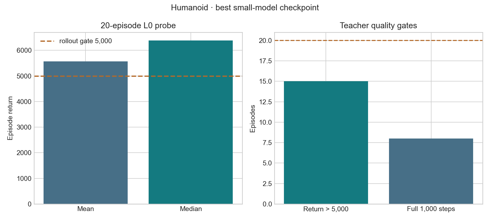
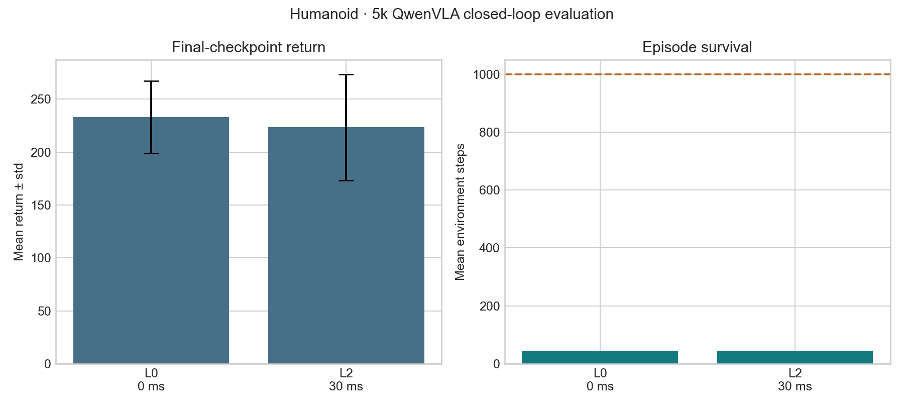

Runtime
Gymnasium 0.29.1 and MuJoCo 3.3.7 construct Humanoid-v4 and render 480×480 RGB through NVIDIA EGL.
latency-sensitive-bench / verified Gymnasium adaptation
The completed pipeline preserves Humanoid-v4's native 17-dimensional continuous action and ordered 376-dimensional state through zero-latency APPO, 100 gated RGB+state teacher episodes, native QwenOFT training, and final-checkpoint L0/L2 evaluation. The small model is strong; the VLA fails closed-loop control.
01 · Outcome
Gymnasium 0.29.1 and MuJoCo 3.3.7 construct Humanoid-v4 and render 480×480 RGB through NVIDIA EGL.
APPO completed 10,006,528 zero-latency frames; the best training statistic is 5,613.319.
100 gated episodes, native conversion, and 5,000-step RGB+state QwenOFT training completed.
Across 40 L0/L2 episodes, every final-checkpoint trajectory falls within 69 steps.
02 · Frozen contract
Humanoid-v4, Gymnasium 0.29.1, MuJoCo 3.3.7.Box vector with 376 values.Box(-0.4, 0.4, (17,), float32).dt=0.015 s; default time limit 1,000 environment steps.hold and FIFO ordering.03 · Small-model training
The run uses synchronous Sample Factory APPO with normalized observations and returns, a native 17D torque policy, and a 376D proprioceptive observation. Training ends at 10,006,528 frames with a late-run mean reward around 5,374 and a valid final checkpoint.

PATH=/home/lzj/miniconda3/envs/latency/bin:$PATH \
MUJOCO_GL=egl PYOPENGL_PLATFORM=egl PYTHONPATH=. \
python -m training.train \
--config configs/examples/gymnasium/humanoid/small_model_train.yamlBest checkpoint: best_000017672_9048064_reward_5613.319.pth. Final checkpoint: checkpoint_000019544_10006528.pth.
04 · Small-model closed-loop probe
The deterministic L0 probe uses 20 episodes and the best checkpoint. The strict rollout gate is canonical return greater than 5,000; the shortest accepted probe episode lasts 794 steps. This is a rollout-threshold probe, not a full L0–L4 latency sweep.

05 · RGB+state QwenVLA
.pt only.| Latency | Return mean ± std | Median | Mean length | Length range | Full episodes |
|---|---|---|---|---|---|
| L0 / 0 ms | 233.191 ± 34.075 | 231.909 | 45.5 | 38–61 | 0 / 20 |
| L2 / 30 ms | 223.524 ± 50.154 | 208.914 | 44.1 | 34–69 | 0 / 20 |

steps_5000_pytorch_model.pt, 20 episodes per latency; both settings lie on the same early-fall floor.MUJOCO_GL=egl PYOPENGL_PLATFORM=egl PYTHONPATH=.:third_party/starVLA \
python -m latency_bench.run \
--config configs/examples/gymnasium/humanoid/starvla_eval.yamlEvaluation uses steps_5000_pytorch_model.pt, L0/L2, 20 episodes per latency, and a maximum of 1,000 raw environment frames.
06 · Evidence ledger
figure builder · all plots are generated from the linked compact evidence.
SHA256SUMS covers all three figures and their compact source evidence.
Runtime semantics follow the version-matched Gymnasium Humanoid-v4 documentation.
07 · Limits